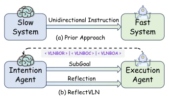
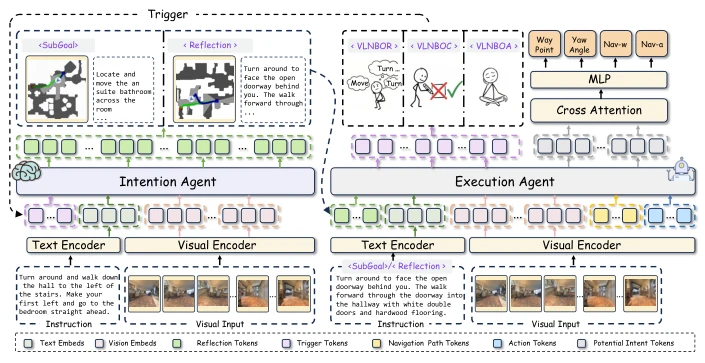
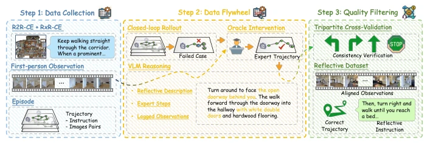
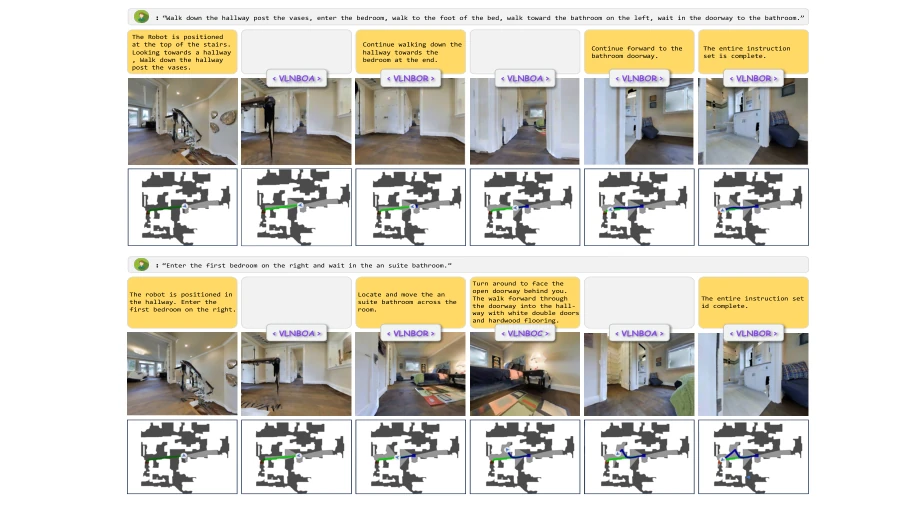

This paper convenes a "reflection meeting" for the VLN community, attempting to solve the chronic issue of "losing way without knowing" in long-range navigation. Traditional methods are like blind men touching an elephant, only caring about walking not looking at the road; after error accumulation, they often persist stubbornly until the end, lacking an explicit error diagnosis mechanism. ReflectVLN implements an "Intent-Execution" dual Agent closed loop; if execution is wrong, it calls the Intent Agent to revise the plan, rather than executing blindly. Although Action-CoT sounds like a variant of CoT, its essence is path auxiliary supervision, forcing the model to think of the route before moving legs. However, relying on VLM to generate reflection descriptions, what if the VLM hallucinates? Moreover, data augmentation is only one round, does it count as "one-time reflection"? Token overhead and latency during inference are not detailed, leaving a suspense. Topping the leaderboard under data constraints is indeed impressive, but real-time performance in actual deployment is questionable, suitable for offline analysis rather than real-time control.
The core pain point of embodied navigation lies in error accumulation during long-range execution. Existing methods such as DualVLN [41] or Hi-Robot [33], although adopting hierarchical designs, mostly employ unidirectional communication: after high-level planning is issued, state deviations from low-level execution cannot be timely fed back to the high-level for correction. This leads to Agents easily deviating from the route under long instructions without realizing it, until complete failure, failing to achieve semantic-level progress tracking. CorrectNav [47] attempts self-correction but relies on multi-round iterative sampling, is computationally expensive and difficult to scale, and lacks language-level reflection feedback. This paper aims to solve this "unidirectional dead end" problem, through an explicit closed-loop feedback mechanism, enabling Agents to diagnose failure and recover in real-time, rather than executing blindly, thereby improving the robustness and interpretability of long-range navigation.

Fig. 1: Comparison between Re- flectVLN and prior slow–fast / dual-system VLN frameworks. Prior cascaded methods pass sub-goals unidi- rectionally from a slow planner to a fast executor. We define three trigger tokens to explicitly control the system mode. <VLNBOR> denotes the start of the reflection phase for sub-goal generation. <VLNBOC> denotes the start of the correction phase for error diagnosis and recovery. <VLNBOA> denotes the action mode, in which the execution agent acts without invoking the intention agent.
The overall framework is divided into bidirectional interaction between Intent Agent and Execution Agent. Intent Agent is responsible for high-level semantic decomposition and reflection, generating subtask descriptions; Execution Agent is responsible for low-level action control and progress monitoring. Both trigger interaction via state tokens (<VLNBOA>/<VLNBOR>/<VLNBOC>), achieving on-demand replanning. Training adopts two stages: Stage I uses Action-CoT to pre-train the Execution Agent, introducing path-level auxiliary supervision; Stage II joint fine-tuning, Intent Agent learns language-level subgoal generation. Regarding data, a reflection-driven dataset is constructed: simulating Agent rollout failure cases, calling expert policies to generate correction trajectories, then using VLM to generate natural language reflection descriptions, added to the training set after consistency filtering. Action-CoT predicts coarse-grained paths via navigation queries, then conditionally generates short-horizon actions, enhancing temporal consistency.

Fig. 2: Overview of ReflectVLN Framework. The intention agent operates as a high-level reflective planner that takes egocentric visual history, the natural-language instruction, and execution feedback from the execution agent as input, and produces a reflective sub-goal description summarizing the next navigational intent. Conditioned on this sub-goal together with visual observations, the execution agent outputs continu- ous motion trajectories and a status token that governs subsequent intention–execution interaction.

Fig. 3: Overview of reflective data generation. The data pipeline contains three steps. (1) Expert/oracle trajectory collection: reference demonstrations and milestone progressions from an oracle expert provide ground-truth trajectories and waypoint- level supervision. (2) Reflective data annotation: we roll out the agent policy, detect deviations from the reference trajectory, and use a VLM to generate a reflective de- scription of sub-goal corrections. (3) Quality filtering: we filter reflective samples by consistency between atomic actions and the reflective annotation.
Tested on R2R-CE and RxR-CE Val-Unseen. Compared to DualVLN [41] and CorrectNav [47], ReflectVLN achieves better SR and SPL under limited data budget (only 1.5M samples). SR improvement on RxR is significant (+4.6 points), proving the closed-loop mechanism is effective under long instructions. Ablation shows Action-CoT contribution is largest (SR +7.2), decoupled design is superior to unified model. On-demand triggering is more efficient than fixed intervals (lower intent call frequency). But inference efficiency only compared call frequency, did not mention specific latency.

Fig. 4: Example visualizations on R2R Val-Unseen. Top: sub-goal grounding and progress tracking. Bottom: off-track detection and recovery via closed-loop replanning.